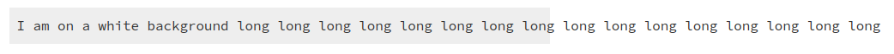
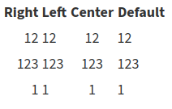
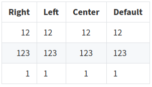

2020-05-09
While writing Everything Pandoc Markdown can do, in which I try to cover everything possible when using Pandoc Markdown to generate HTML, I bumped into a few things I had to fix while I went along: some CSS tweaks, and pbb wrappers for MathJax and bibliography functionality. Looks like “CSS tweaks” is a common theme in these update posts!
For this round of CSS tweaks, I removed the grey background from all <pre> (code) blocks as I ran into problems when displaying code blocks with line numbers; overflow-x would either make long lines overflow:

or make the line numbers disappear:
I’m pretty sure there would have been a solution to this, but it eluded me, so now
Code blocks with no indicated language such as
```
I am on a white background
```are just rendered like this:
(Using an image here so this still makes sense if the styling ever changes in the future.)
Code blocks with a language indicated such as
```bash
echo "Hello there."
```are rendered on grey:
Code blocks with numbered lines such as
```{.bash .numberLines}
echo "Hello there."
```have non-invisible line numbers:
Default Pandoc HTML styling doesn’t do anything with tables, and this

just doesn’t look all that great.
I took some inspiration from how GitHub styles its tables, and now they look like this:

Pandoc supports inline and display math (see here). To make it look prettier, there is a range of options; I’ve settled on MathJax. This requires running pandoc with the --mathjax option. I’ve introduced two new subcommands, pbb enable and pbb disable, that allow toggling features like this one; after setting pbb enable math and including inline or display math in a post, it’ll be rendered using MathJax.
\[\frac{p_4}{p_1} = \frac{p_2}{p_1} \left(1 - \frac{(\gamma_4 - 1)(a_1/a_4)(p_2/p_1 - 1)}{\sqrt{2\gamma_1 \bigl(2\gamma_1 + (\gamma_1 + 1)(p_2/p_1 - 1)\bigr)}}\right) ^{-2\gamma_4/(\gamma_4 - 1)}\]
(Taken from a previous life. Super useful if you have a shock tube lying around somewhere.)
This means that either all or no pages are created using --mathjax. However, if a page does not include any math, the MathJax script isn’t loaded anyway, so there’s no unnecessary weight added.
The second feature that can be toggled using pbb enable is to allow using citations and bibliography; pbb enable bibliography adds --filter=pandoc-citeproc to the pandoc incantation.
After this, citations to a bibliography provided as a separate file or inline in the YAML front matter are rendered using the default citation style, Chicago Manual of Style author–date.
Pandoc supports any style supported by the Citation Style Language (CSL). Pbb doesn’t offer a convenient way to control this, but it can be changed by adding a value for csl to the default metadata file, .metadata.yml. I’ll revisit when I think I sorely need more options for citations styles.
The current style can be seen in the citations section of my Pandoc Markdown post. The heading of the bibliography is just “Bibliography”, which can also be changed in .metadata.yml.